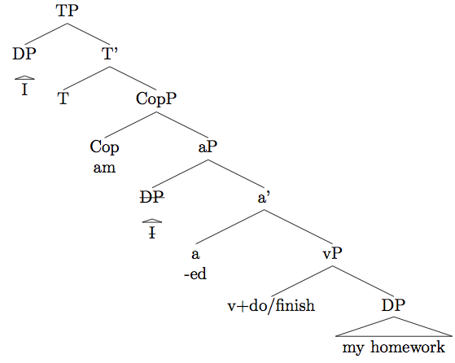

'I'm done my homework' - Case assignment in a stative passive.
Josef Fruehwald and Neil Myler (2013)
Abstract
We present an analysis of an underdescribed construction common to Canadian and Philadelphian English dialects which appears to involve an instance of the copula/passive auxiliary be, a participial form of finish or do, and a DP complement receiving accusative Case (see Yerastov (2008) for a descriprition and discussion of its geographical distribution). This construction, which is fully productive and non-idiomatic, is illustrated in (1).
- I'm finished/done my homework.
-
- What is the category of the phrase headed by the participle?
- Where is the external argument introduced?
- Where does the accusative Case of the internal argument come from, given the apparently passive structure.
- Why is this construction lexically restricted to the participles of finish and do.
-

-
- The construction involves a resultative adjectival passive, rather than a full eventive passive or an active past participle (i.e. there is no Voice head)
- The external argument is therefore introduced not in spec-VoiceP (which is absent) but in the subject position of the adjectival small clause (which we depict here as spec-aP).
- The accusative Case of the internal argument is assigned by a little-a head, perhaps similar to the little-a head which assigns accusative case to the objects of worth.
- The lexical specificity of this construction is due to the selectional properties of this little-a head.
Presented at PLC 37
blog comments powered by Disqus